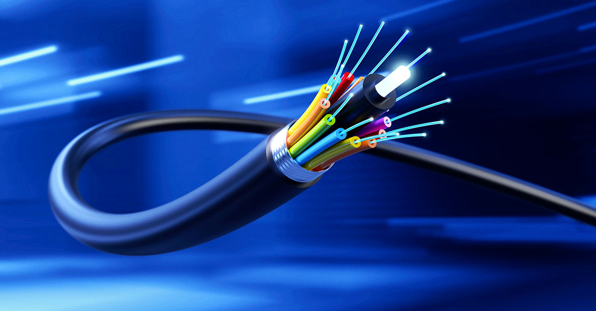

fibra optíca
A fibra óptica é um filamento ultrafino de vidro ou plástico que transmite dados, voz e vídeo através de pulsos de luz. Graças à velocidade da luz, ela oferece altíssima velocidade de internet, estabilidade superior e imunidade a interferências eletromagnéticas, superando os cabos de cobre
